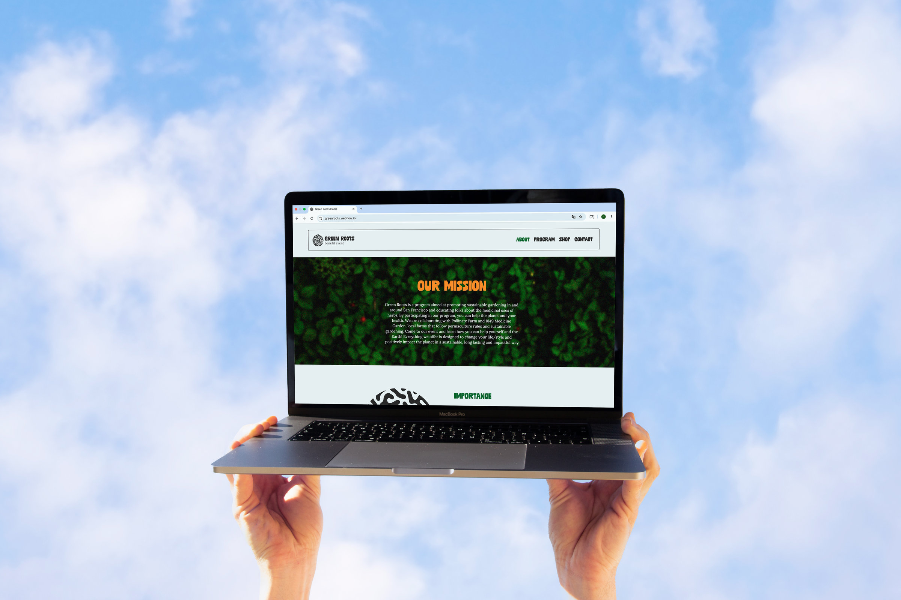
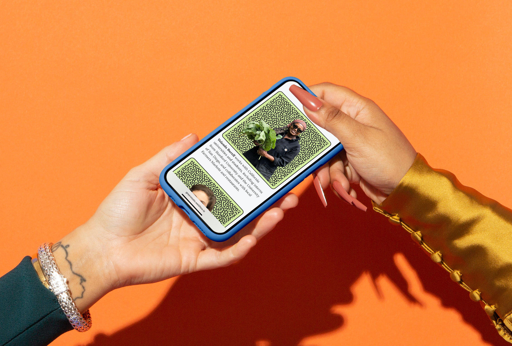
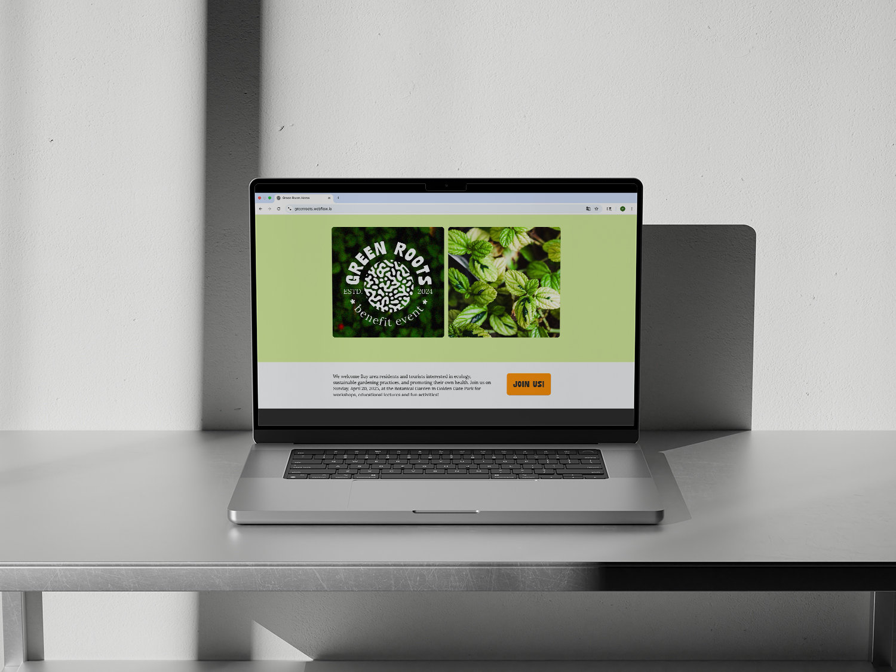
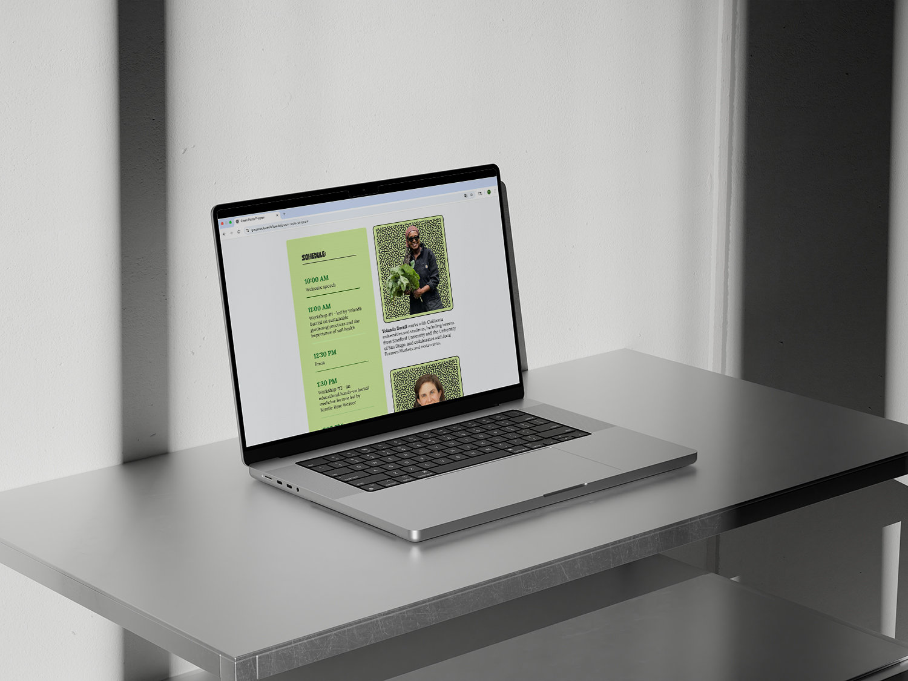
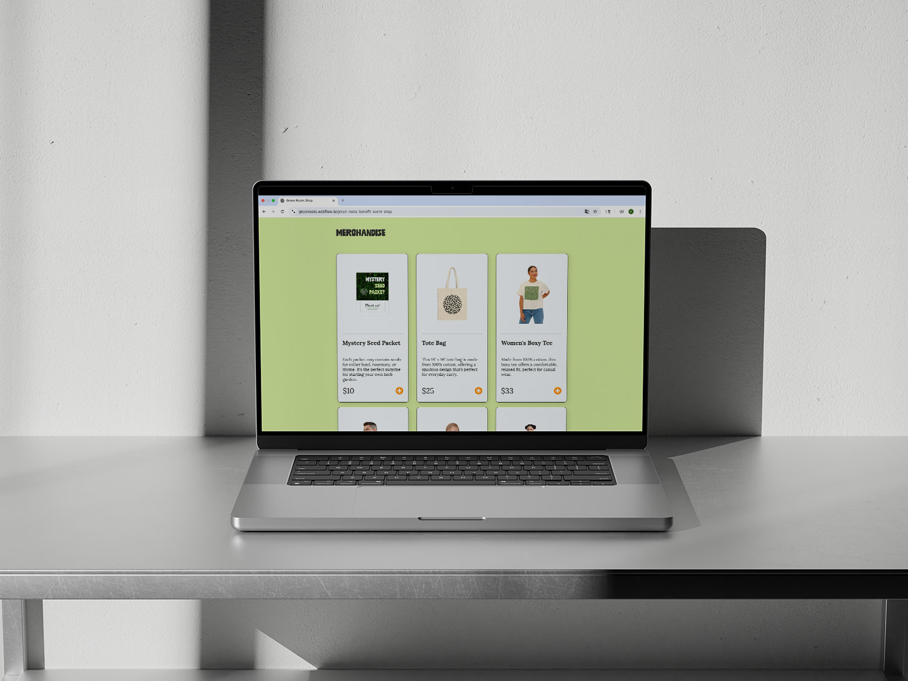
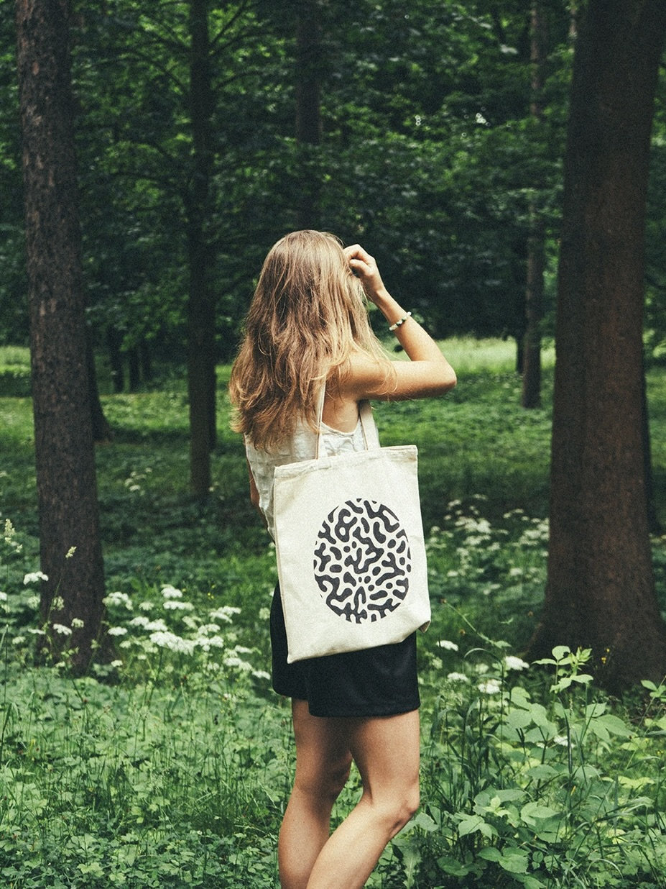
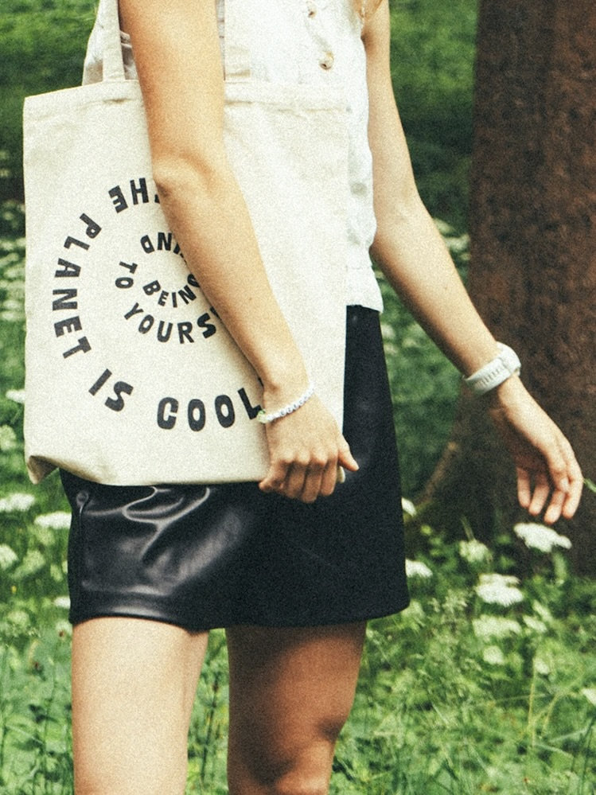

Green Roots
Fall 2024
Brand Design, Website







Concept
"Green Roots" is a fictional benefit event designed to promote sustainable gardening and the use of herbs as an alternative to traditional medicine in and around San Francisco. The event brings together local farm owners and an herbalist from the Bay Area as guest speakers, offering educational workshops to teach attendees about farming practices and the medicinal benefits of herbs. Targeting young people and families, Green Roots provides an accessible way to learn about sustainable practices and natural remedies.
Brand Identity
The brand guide covers logo variations, typography treatments, textures, and patterns. Its central element is a custom root pattern built in Photoshop, which carries across the website, the merchandise, and the printed event materials.
Website & Production
The website was built in Webflow from a concept and layout designed in Figma. The project also covers the event schedule and the design and production of the merchandise.